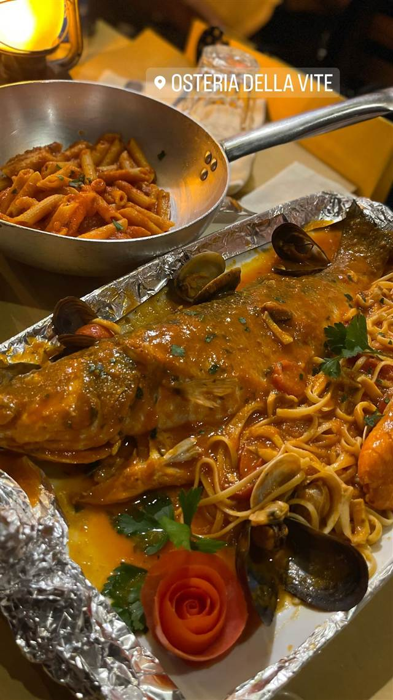

Osteria della Vite
OSTERIA DELLA VITE
REVIEWS
みんなの声
「接客の良さと観光地特有の混雑」に注目
- 観光客向けの立地ながらスタッフが親切で料理も美味しいと満足する声が目立つ
- 観光客の多いエリアのため混雑時はサービスが行き届かないと感じる人もいる
TheFork 口コミ98件
| 看板 | ローマの伝統料理とピッツァ、魚介パスタなど |
|---|---|
| こだわり | 上質な有機食材を使用 |
| 場所 | メトロA線 Spagna駅 Via della Vite 96, 00187 Roma, Italia |
| 注意 | スペイン階段近くのヴィーテ通りに位置、アペリティフから夕食まで通し営業 |
食べたもの：魚介パスタ
NEARBY
近い店・同じ系統の店
-
 パスタ 麻布十番
Grill & Pasta es 麻布十番
六本木Ajitoの姉妹店、特製グリルで焼く牡蠣グラタン
昼 ¥1,000～¥1,999 夜 ¥4,000～¥4,999
パスタ 麻布十番
Grill & Pasta es 麻布十番
六本木Ajitoの姉妹店、特製グリルで焼く牡蠣グラタン
昼 ¥1,000～¥1,999 夜 ¥4,000～¥4,999
-
 パスタ ワイキキ
Arancino di Mare
ハワイ最高のイタリアンに選ばれた、直輸入食材のパスタ
昼 ¥2,000～¥2,999 夜 ¥15,000～¥19,999
パスタ ワイキキ
Arancino di Mare
ハワイ最高のイタリアンに選ばれた、直輸入食材のパスタ
昼 ¥2,000～¥2,999 夜 ¥15,000～¥19,999
-
 パスタ 自由が丘
パスタバル MiKiYA's 自由が丘
モンスーンカフェを育てた元取締役が作る自家製生パスタ
昼 ¥1,000～¥1,999 夜 ¥3,000～¥3,999
パスタ 自由が丘
パスタバル MiKiYA's 自由が丘
モンスーンカフェを育てた元取締役が作る自家製生パスタ
昼 ¥1,000～¥1,999 夜 ¥3,000～¥3,999
-
 パスタ 江ノ島駅(江ノ電)徒歩3分
PIZZERIA&DINING PICO 江ノ島店
しらすピッツァと自家製パンチェッタのカルボナーラが名物
昼 ¥1,000～¥1,999 夜 ¥2,000～¥2,999
パスタ 江ノ島駅(江ノ電)徒歩3分
PIZZERIA&DINING PICO 江ノ島店
しらすピッツァと自家製パンチェッタのカルボナーラが名物
昼 ¥1,000～¥1,999 夜 ¥2,000～¥2,999
-
 パスタ 白金高輪
アル チェッポ (Al Ceppo)
季節で北と南のイタリアが入れ替わる、ビブグルマンの一皿
昼 ¥1,000～¥1,999 夜 ¥8,000～¥9,999
パスタ 白金高輪
アル チェッポ (Al Ceppo)
季節で北と南のイタリアが入れ替わる、ビブグルマンの一皿
昼 ¥1,000～¥1,999 夜 ¥8,000～¥9,999
-
 パスタ 外苑前
Gar Eden（ガルエデン）
イタリア仕込みの女性シェフとビール好きの店長が営む一軒家
夜 ¥6,000～¥7,999
パスタ 外苑前
Gar Eden（ガルエデン）
イタリア仕込みの女性シェフとビール好きの店長が営む一軒家
夜 ¥6,000～¥7,999